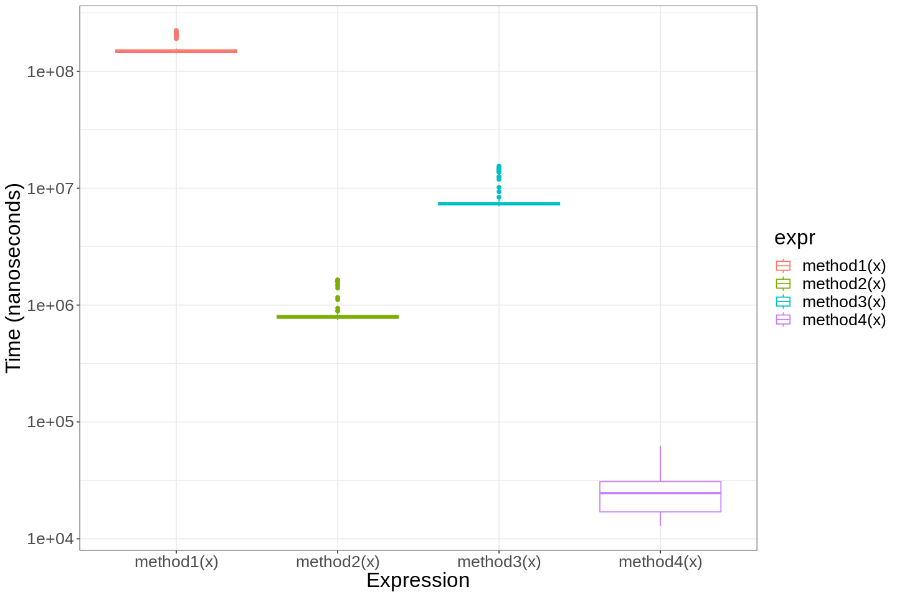
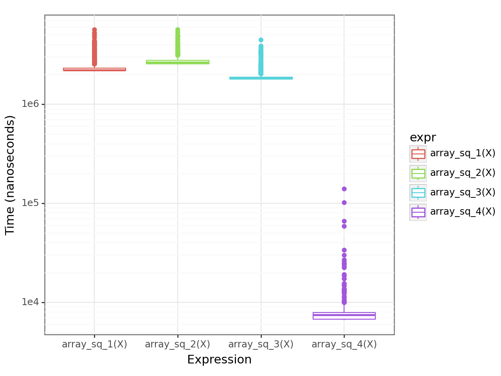

Cover image taken from Unstable Diffusion
Summary: Recently, I was working on a project where I had to optimize for both time and memory consumption of the program to make it more efficient. In this post, I share a few key insights that I have gained from that.
Time and memory are the two primary constraints for any software design. Usually, you can only optimize for one of these, sacrificing the others. For example, imagine you want to print all the prime numbers from 1 to 100. Let’s think of two approaches to solve the problem.
You count the numbers like 1, 2, 3, … and so on, and for each number, you check whether it is prime or not. To check whether a number (say 17) is prime, you check if it is divisible by 2, then if divisible by 3, then by 4, by 5, by 6, by 7, and so on. Whenever you find a prime number, you print it and go to the next number for checking.
Another approach is you keep a list of prime numbers discovered so far. Then for every new number that you want to check if it is prime or not, simply try dividing by only the prime numbers (instead of checking divisibility by 2, 3, 4, 5, 6, and all numbers). Finally, print all the numbers from the list.
In the first approach, we are trying to optimize for memory, but consuming more time checking division with every number. In the second approach, using a bit more memory by keeping a list of prime numbers, it is trying to optimize for time by checking division with only the prime numbers.
So it looks like if you want your program to be faster, you should use more memory.
Okay, so just shove down a few RAMs to your 10-year-old laptop, and it can feel like it is a super-computer? 💥
Well, the answer to the question of whether ``using more memory makes your program run fast’’ is both yes and no. And no, I am not talking about efficient algorithms that you can implement to reduce both time and memory footprint. Rather, gaining an understanding of how different programming languages store basic data types and data structures can greatly improve the efficiency of your code. Recently, I was working on a project where I had to optimize both the time and memory consumption of the program to make it more efficient. I did some experiments on this and got a few interesting findings that helped me understand this better. I am sharing these findings here in this post so that you also can leverage the same to make your program more efficient.
Let us consider a simple problem that we want to solve using R programming language. The problem is that, given an array of numbers, we need to return another array whose elements are the square of the corresponding elements of the original array elements. For example, if the input is [1, 2, 3], then the output should be [1, 4, 9].
Now we will see different methods of solving this problem, some optimize memory, and some optimize computational time.
The first method is to optimize for memory usage. So, we create a blank array to hold the output elements, then we loop over the elements of the input array and dynamically keep putting them into the output array.
method1 <- function(arr) {
arr2 <- c()
for (elem in arr) {
arr2 <- c(arr2, elem^2) # grow memory
}
return(arr2)
}
This is often called the Growing Memory__ method.
As you have suspected, instead of dynamically adding more elements to the output array, this method initially assigns memory for the entire output array, and then it keeps updating the elements of this output array as required. Since it requires more memory than the previous method, we expect this to be a bit faster.
method2 <- function(arr) {
n <- length(arr)
arr2 <- numeric(n) # initially allocate memory
for (i in 1:n) {
arr2[i] <- arr[i]^2
}
return(arr2)
}
This is a variation of the Growing Memory method, but instead of creating a blank array, we create a list. From the introductory data structure classes, we know that a linked list is a more complicated data structure than an array, so we expect it to be even slower and more complex than the previous two methods.
method3 <- function(arr) {
arr2 <- list()
for (i in 1:length(arr)) {
arr2[[i]] <- arr[i]^2 # does not grow memory
}
return(unlist(arr2))
}
Finally, we perform the direct way almost every R practitioner will solve this problem, but using the vectorization capabilities of R. We call this method 4.
method4 <- function(arr) {
return (arr^2) # vectorize
}
Let us now compare the time performances of these methods. We will use the microbenchmark package in R to measure the time taken by each method.
x <- runif(10000)
times <- microbenchmark::microbenchmark(method1(x), method2(x), method3(x), method4(x), times = 100)
Here is a summary of the average time taken by each method, shown in a boxplot below.

The results indicate that method4 is the fastest, followed by method2 and method3. The vectorization trick is about 30 times faster than the best-competing method, i.e. constant memory method. This constant memory method was about 10 times faster than the growing memory method with a list, and finally, the growing memory method with a list is about 20 times faster compared to its array-based variant.
Well, the reason for these surprising results is as follows:
Internally, R always stores vectors or arrays as continuous chunks in this memory, each element occupying one chunk.
When you assign x <- c(), the R program looks to the RAM and searches for a single-length free space on the RAM. Actually, a zero-length chunk to store the data and one unit/byte/chunk to store some metadata. For example, in the below diagram, the grayed-out nodes are being used by other programs. So the program scans from first to last, finds the first available continuous chunks of length 1 (i.e., A3), and creates a variable x having a pointer to the start of the chunk A3.
Now when in the for loop, we calculate the square and update the array using arr <- c(arr, elem^2), it determines that it now needs to find a continuous chunk of length 2.
So it performs the search from the start again and now sees where it can first time find a continuous chunk of length 2, free from usage of other programs. It finds, A3 and A4. So, it copies the value of A3 to A3 again (well, this is the really inefficient part :sad: ), and copies the value of elem^2 to A4. These new chunks used by R are shown in yellow.
Hence, as the list of the array grows, the R program keeps scanning again and again for new continuous memory chunks and copies the data over and over, which makes the growing memory method extremely slow.
On the other hand, the constant memory method assigns the entire continuous chunk of memory at the beginning, so the search for free memory happens only once. This speeds up the process greatly.
Now, maybe you are wondering, how come the growing memory method with a list is faster. The reason is that the list data structure does not require you to store data in a continuous memory chunk at all. This is why you cannot directly use a list to perform vectorized computation, since vectorized computing inherently uses C for loops which expects data to be present in continuous memory chunks for rapid access. Therefore, each time we expand the list, R simply needs to look for one additional storage chunk, irrespective of where previous storage chunks are, and store the address (or pointer) to the chunk in the variable’s memory.
Therefore, in R, you should always try using vectorization whenever possible. If not possible, try to pre-allocate memory. And if you don’t know how much to allocate, the best bet is to use lists instead of arrays.
You can find many more useful R tricks and techniques in the book Advanced R__ by Hadley Wickham1.
I did the same kind of exercise using Python to compare the behaviour. As you have guessed from the title of this part, it has a completely different behaviour than R when come to memory management.
In Python, you can start with a blank array, and use append method to grow your array. However, python does not have a concept of a list like R, the list and array have the same meaning in Python. So, instead of the method3 as above, we consider the variant with list comprehension, which is basically a one-liner code to create a list, instead of doing the loop explicitly. Finally, for the vectorization method, we use the popular Python library numpy, which uses a built-in C routine to perform vectorized operations.
import numpy as np
def array_sq_1(arr):
newarr = []
for elem in arr:
newarr.append(elem ** 2) # grow the memory
return newarr
def array_sq_2(arr):
newarr = [0] * len(arr) # allocate constant memory
for i in range(len(arr)):
newarr[i] = arr[i] ** 2
return newarr
def array_sq_3(arr):
newarr = [elem**2 for elem in arr] # do list comprehension
return newarr
def array_sq_4(arr):
return np.array(arr)**2 # vectorized squaring using numpy
Here is a summary of the average time taken (in microseconds) by each method, again shown in a boxplot.

In contrast to R, now method1 of growing memory is not the worst out there, comparatively, array modifications in place with constant memory usage are slightly worse. However, again, the vectorization using the numpy C-routine is extremely fast, achieving a result close to the vectorized method4 in R.
Since it was a bit surprising for me, I tried to dig deeper and understand why Python exhibits a completely different behaviour compared to R. I couldn’t find a good resource that explains it. However, based on seeing some hints in different documentations, source code for Python, some Reddit forums, here’s my understanding:
Python lists are not just only simple continuous memory chunks like R. Python lists are not like R lists either, so these are not stored in scattered memory locations. It still stores the data in continuous memory locations but adds some additional overhead metadata storage that helps with different kinds of optimization.
You can actually see this by using sys.getsizeof([1, 2, 3]) and noting the size of a list with 3 integers is much more than 24 bytes (3 times 8 bytes for each integer). In fact, the empty list has a size of 64 bytes, and for each additional item, it adds 8 bytes of storage to it, as demonstrated here in this Stack Overflow link2. This initial 64 bytes is the overhead.
This overhead contains the address location of the last element of the array.
So, now if one uses the append function, Python performs 3 simple steps:
This means, during method 1 when we use append, Python almost never does the copying unless it is absolutely required, hence it has significantly low time complexity.
On the other hand, to access the elements of a list, Python needs to do 2 calculations: first, find out the initial address position, and then use that to calculate the i-th address position by offset i many chunks of memory location after that initial address position. This slightly increases the cost compared to method 1 since the append() essentially goes only to the next location which is easier to calculate.
The list comprehension method is faster than both method 1`` and method 2` since in this case, the list is first created temporarily and then it is copied to the correct location. So, it never runs into the problem of running out of free space, since you absolutely know the size of the array (i.e., the number of available memory locations you will need in a continuous chunk.)
Finally, the vectorized routine by numpy is much faster, since the computation happens through low-level C routine, as in the case of R program.
In any case, if you have a better understanding of why Python behaves differently than R, please feel free to comment below. I would love to hear from you.
In conclusion, the basic investigation into optimizing time and memory constraints underscores the importance of understanding how various programming languages handle memory. However, while prioritizing efficiency, we mustn’t forget the significance of simplicity in the code. I believe that
Thus, achieving a balance between efficiency and clarity is vital for creating software that performs optimally while remaining understandable and maintainable over time.